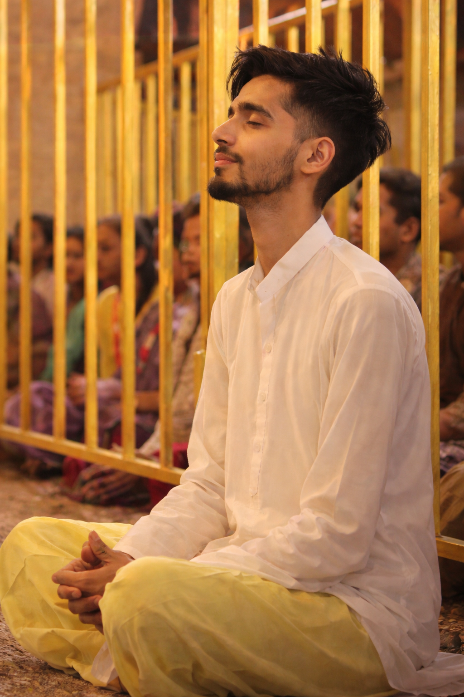

Independent thinking. Global perspectives.
The world is changing. Understanding it matters.
YugNiti explores geopolitics, technology, and global affairs to help people understand not just what is happening, but why it matters.
What is YugNiti?
YugNiti is a growing media initiative built around curiosity, context, and clear explanations. It explores the forces shaping our world, from international relations and geopolitical competition to emerging technologies and artificial intelligence.
Its purpose is to make complex subjects easier to understand, encourage independent thinking, and connect global developments to the bigger picture.
It is written for students, professionals, and curious readers who want depth without jargon: people who would rather understand a subject properly than skim ten summaries of it.
Beyond the headlines.
In a world full of information, understanding can be harder to find. Headlines often tell us what happened, while the deeper context behind events can be overlooked.
YugNiti aims to explore those connections, ask better questions, and make important global developments more understandable. The goal is not to tell people what to think, but to give them more context to think for themselves.
- 01
Context over noise
Explore the background and consequences behind major developments.
- 02
Curiosity over assumptions
Approach complex subjects with thoughtful questions and an open mind.
- 03
Understanding over sensationalism
Explain ideas clearly without unnecessary fear or exaggeration.
Where we look.
YugNiti follows a handful of subjects that increasingly shape one another. Each is approached with the same habit: slow down, add context, and explain clearly.
Geopolitics
How power, geography, alliances, and rivalry shape what nations do, and why they do it.
Global affairs
The institutions, agreements, and tensions that connect countries, economies, and societies.
Technology
How tools and infrastructure change the way people live, work, and compete.
Artificial intelligence
What this fast-moving field may mean for economies, security, and everyday decisions.
Strategic thinking
Ways of reasoning about choices, trade-offs, and long-term consequences.
Ideas and society
Where innovation meets culture, ethics, and the public interest.
How we think.
Understanding rarely arrives in one step. A simple, repeatable way of working keeps the focus on clarity rather than speed, and on questions rather than hot takes.
- 01
Observe
Notice what is happening, who is involved, and what is at stake.
- 02
Connect
Link the event to its history, its economics, and the technology behind it.
- 03
Question
Test assumptions and ask what the first version of the story leaves out.
- 04
Explain
Put it in plain language, so the idea stays with the reader.
Questions we keep asking.
- What happened, and what led up to it?
- Who benefits, and who bears the cost?
- What is missing from the story so far?
- What could happen next, and what would change it?
Our vision
Make the complex understandable.
Our vision is to build a thoughtful platform where global affairs, technology, and strategic ideas become accessible to curious minds. YugNiti aims to encourage informed perspectives, deeper questions, and a better understanding of an increasingly connected world.

The person behind the initiative
OM PANDEY
Co-founder, YugNiti
Om Pandey is a software developer interested in technology, global affairs, and the relationship between innovation and society. Through YugNiti, he aims to explore complex ideas and make meaningful global developments easier to understand.
Stay curious. See the bigger picture.
Because understanding the world begins with asking better questions.